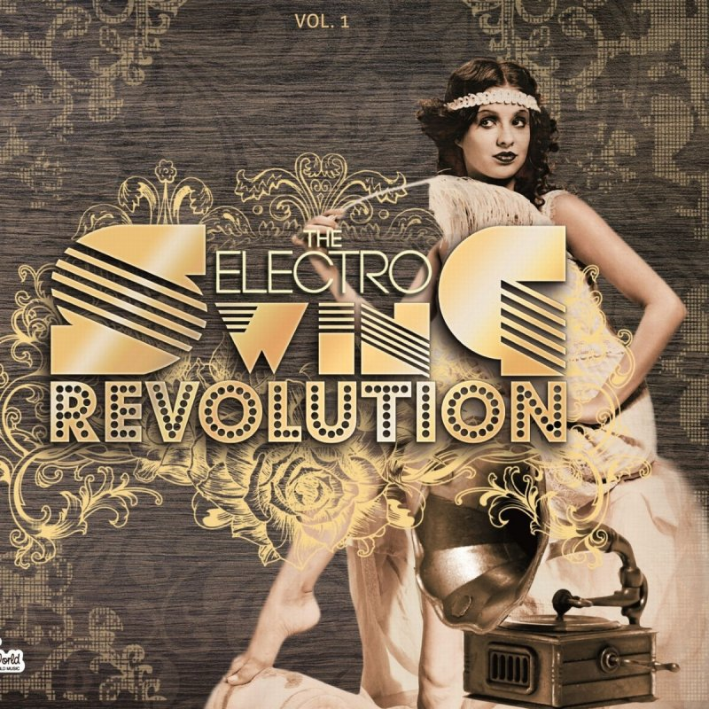
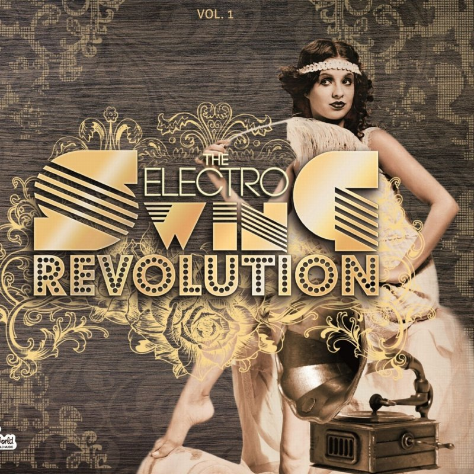

El electro swing, electroswing o vintage remix es un género musical que combina la influencia del swing moderno o
vintage con el jazz, sumado al house, hip hop y la música electrónica de baile. Se trata de un sonido moderno y orientado
hacia las pistas de baile, más accesible para el oído contemporáneo, pero que retiene la energía de las primeras grabaciones de
swing.
El término «electro swing» nació de la mano de la discográfica francesa Wagram Music, cuando en 2009 preparó una
colección de temas del género. Sin embargo, Marcus Füreder, miembro de Parov Stelar, afirmó haber creado el nombre
mucho antes de ese año. Tom Hyland, miembro de The Electro Swing Circus, afirma que no es tanto un género en sí como
una tendencia, un estilo de swing dentro de la música electrónica.
El electro swing también es un género musical que puede bailarse. Su estilo es similar al del swing tradicional, pero más
veloz y con pasos de baile moderno. En las redes sociales se comenzó a promover el aprendizaje de esta danza; en general,
los bailarines se visten como en la década de 1920.
Algunos de los artistas más populares de este género son Caravan Palace, Parov Stelar, Chinese Man, Yolanda Be Cool, Caro
Emerald, Deluxe, Dimie Cat, Boogie Belgique, The Electro Swing Circus, entre otros.


 
